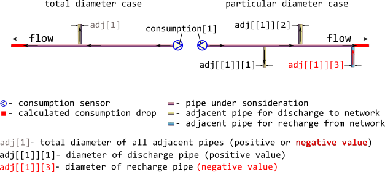

Calculate drop or recovery of flow rate in pipe using geometric factors.
The calculated value may be positive or negative. When it is positive they have the drop, i.e. the decrease of flow rate in the outlet of pipe under consideration. When the calculated value is negative they have the recovery, i.e. the increase of flow rate in the outlet of pipe under consideration. In both cases to calculate flow rate on the outlet of pipe under consideration simply subtract the calculated value from the sensor-measured flow rate on the inlet.
Arguments
- adj
diameters of adjacent pipes through which discharges to and recharges from network occur, [mm].
Types:
assert_doubletotal diameter of all adjacent pipes (total diameter case)
assert_listofassert_doublea set of diameters of adjacent pipes (particular diameter case)
Positive values of diameters of adjacent pipes correspond to discharging process through those pipe, whereas negative values of diameters mean recharging. See Details and Examples for further explanations.
- d
diameter of pipe under consideration, [mm]. Type:
assert_double.- flow_rate
sensor-measured amount of heat carrier (water) that is transferred through the inlet of pipe during a period, [ton/hour]. Type:
assert_double.
Value
flow rate drop or recovery at the outlet of pipe,
[ton/hour], numeric vector. The value is positive for drop,
whereas for recovery it is negative. In both cases to calculate
flow rate on the outlet of pipe under consideration simply subtract the
calculated value from the sensor-measured flow rate on the inlet.
Type: assert_double.
Details
It is common that sensor-measured flow rate undergoes discharges to network and recharges from it. For calculation of flow rate drop or recovery the next configuration of district heating network segment is assumed:

Usually, there are no additional sensors that could measure flow rate in each flow fork. In that case they only may operate with geometric factors, i.e. assuming that flow rate is proportional to square of pipe diameter.
The simple summation of flow rates over all adjacent pipes produces the required flow rate drop or recovery located on the outlet of the pipe under consideration. Since there is concurrency between discharges and recharges the diameters of discharge pipes are regarded positive whereas diameters of recharge pipes must be negative.
Be careful when dealing with geometric factors for large amount of recharges from network: there are no additional physical constraints and thus the calculated value of recovery may have non-sense.
Examples
library(pipenostics)
# Let consider pipes according to network segment scheme depicted in figure
# in [?dropg] help-page.
# Typical large diameters of pipes under consideration, [mm]:
d <- as.double(unique(subset(pipenostics::m325nhldata, diameter > 700)$diameter))
# Let sensor-measured flow rate in the inlet of pipe
# under consideration be proportional to d, [ton/hour]:
flow_rate <- .125*d
# Let consider total diameter case when total diameters of adjacent pipes are no
# more than d, [mm]:
adj <- c(450, -400, 950, -255, 1152)
# As at may be seen for the second and fourth cases they predominantly have
# recharges from network.
# Let calculate flow rate on the outlet of the pipe under consideration,
# [ton/hour]
result <- flow_rate - dropg(adj, d, flow_rate)
print(result)
#> [1] 75.96439 134.72222 65.70302 180.80580 78.05995
# [1] 75.96439 134.72222 65.70302 180.80580 78.05995
# For more clarity they may perform calculations in `data.table`.